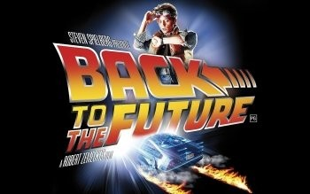

De Volta para o Futuro Estreia Hoje e Revoluciona o Cinema
O aguardado filme "De Volta para o Futuro" faz sua estreia nos cinemas hoje, trazendo uma mistura nunca antes vista de aventura e ficção científica.
2 min de leitura
"De Volta para o Futuro," o novo filme de aventura e fição científica dirigido por Robert Zemeckis, estreia hoje nos cinemas, prometendo levar os espectadores a uma viagem através do tempo.

Hoje marca a estreia mundial de "De Volta para o Futuro," um filme que promete transformar a maneira como vemos o gênero de ficção científica. Dirigido por Robert Zemeckis e estrelado por Michael J. Fox e Christopher Lloyd, o filme conta a história de Marty McFly, um adolescente que é acidentalmente enviado de volta no tempo 30 anos por seu amigo, o Dr. Emmett Brown.
O filme mistura humor, ação e uma trilha sonora vibrante, sendo já aclamado como um dos lançamentos mais emocionantes do ano. A direção de Zemeckis e seu roteiro, foram elogiados nas primeiras críticas. Com efeitos especiais impressionantes e atuações carismáticas, "De Volta para o Futuro" promete se tornar um marco no cinema.
Não perca a chance de ver essa incrível viagem no tempo. "De Volta para o Futuro" está em cartaz nos cinemas a partir de hoje!